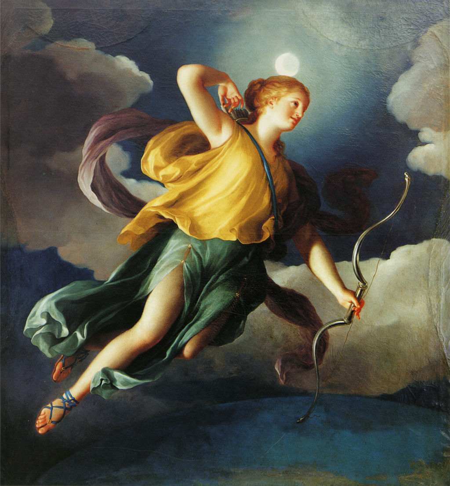

<head>
<meta charset="UTF-8" />
<meta name="keywords" content="drawing, painting" />
<meta name="description" content="drawings by Sunjy" />
<title>Sunjy</title>
<link rel="shortcut icon" type="image/x-icon" href="../../mImages/mCommon/favicon.ico" media="screen" />
<link rel="stylesheet" type="text/css" href="../../mCsses/mCommon/mCssA.css" />
<link rel="stylesheet" type="text/css" href="../../mCsses/mCommon/mCssB.css" />
<link rel="stylesheet" type="text/css" href="../../mCsses/mCommon/mCssC.css" />
<link rel="stylesheet" type="text/css" href="../../mCsses/mCommon/mCssD.css" />
<link rel="stylesheet" type="text/css" href="../../mCsses/mContent/mCssA.css" />
<link rel="stylesheet" type="text/css" href="../../mCsses/mContent/mCssB.css" />
<link rel="stylesheet" type="text/css" href="../../mCsses/mContent/mCssC.css" />
<link rel="stylesheet" type="text/css" href="../../mCsses/mContent/mCssD.css" />
</head>
<script type="text/javascript" src="../../mScripts/mContent/mContentAA.js" /></script>
<script type="text/javascript" src="../../mScripts/mContent/mContentAB.js" /></script>
<script type="text/javascript" src="../../mScripts/mContent/mContentAC.js" /></script>
<script type="text/javascript" src="../../mScripts/mContent/mContentAD.js" /></script>
<script type="text/javascript"></script> 
<script type="text/javascript">
document.write('<div class="mImgAbsolute"></div>');
/*
document.write('<p class="mFontSizeBColor" />From a white paper...</p>');
document.write('<table class="center"><tr><td>');
document.write('');
document.write('</td></tr></table>');
*/
</script>


<script type="text/javascript">
document.write('<p class="mFontSizeBColor" />Diana as Personification of the Night</p>');
document.write('<p class="mFontSizeSColor" />“Diana as Personification of the Night” by Anton Raphael Mengs depicts Diana goddess of the H+unt and the Moon in full flight above the earth. She is holding her symbol of bow and quiver as she stretches back to retrieve an arrow while on the hunt during the full moon. This painting is one of an ensemble of four paintings with personifications of the times of day intended as a decorative panel, set within ornamental moldings, for the boudoir of a Royal Princess.<br><br>Diana was often considered to be a goddess associated with fertility and childbirth and the protection of women during labor. This attribute probably arose as an extension of her association with the moon, whose cycles were believed to parallel the menstrual cycle, and which was used to track the months during pregnancy.<br><br>Anton Raphael Mengs (1728 – 1779) was a German painter, active in Dresden, Rome, and Madrid. He painted in the Rococo period of the mid-18th century but became one of the precursors to Neoclassical painting, which replaced Rococo as the dominant painting style.<br></p>');
document.write('<table class="center" /><tr><td>');
document.write('<br>Diana was often considered to be a goddess associated with fertility and childbirth and the protection of women during labor. This attribute probably arose as an extension of her association with the moon, whose cycles were believed to parallel the menstrual cycle, and which was used to track the months during pregnancy.<br><br>Anton Raphael Mengs (1728 – 1779) was a German painter, active in Dresden, Rome, and Madrid. He painted in the Rococo period of the mid-18th century but became one of the precursors to Neoclassical painting, which replaced Rococo as the dominant painting style.<br>" />');
document.write('</td></tr></table>');
</script>


